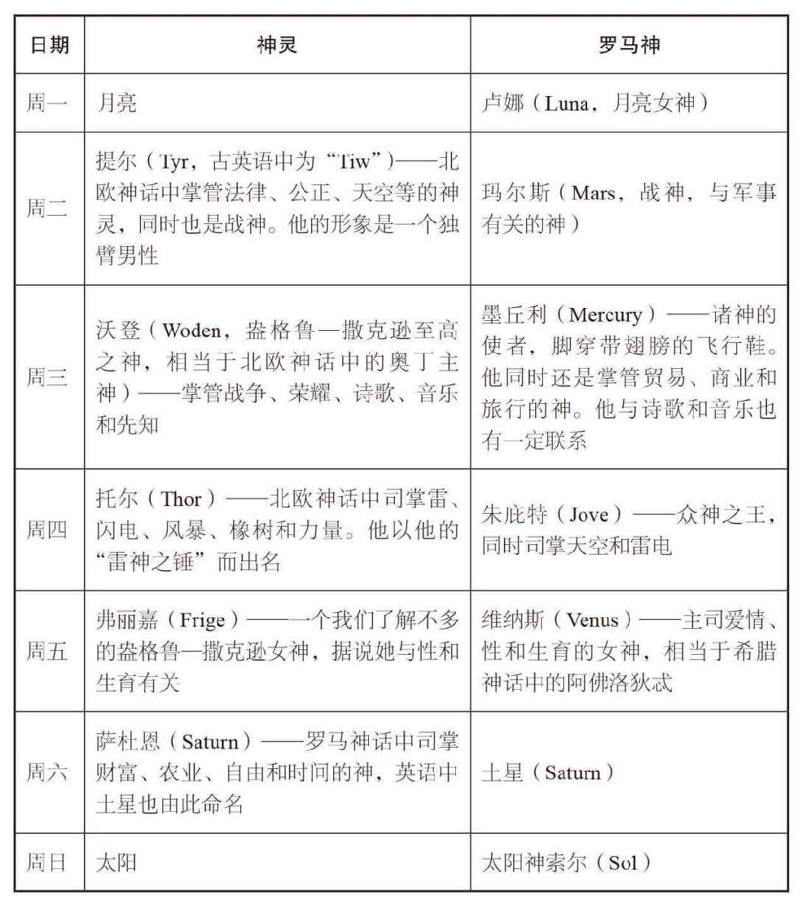

每7天为1周，是我们通过罗马从巴比伦人和古代犹太人那里继承来的。一周里每一天的命名 [4] 来自7个“经典行星”——早期天文学家可肉眼观测到的星球。它们分别为太阳（周日）和月亮（周一），以及5个其他行星：水星（周三）、金星（周五）、火星（周二）、木星（周四）和土星（周六）。
除行星这一因素外，每周7天还和巴比伦及犹太传统有关。传统中，他们将第7天赋予宗教含义。《旧约》中，上帝花6天创造地球万物，第7天休息，所以犹太人总在第7天庆祝神圣休息日。巴比伦人每7天庆祝一次是为了与新月等月相 [5] 重合，即月球轨道或“太阴月”的四分之一（虽然时间不匹配导致无法同步，但一周7天这个规律保留了下来）。古代中国、埃及以及秘鲁采用每周10天的历法，玛雅人和阿兹特克人的一周是13天。
多年来，很多国家都曾试着修订每周7天这一计时结构。1929年到1940年间，苏联实行一周5天。1793年，法国大革命时期引入了一个全新的基于数字10的历法系统，每周10天，每一天都起了一个新名字（后文有更多相关内容）。
英语中星期一到星期日的名字是7个挪威、盎格鲁—撒克逊和罗马神灵的混合，同时也蕴含着有关不同人种征服英国的历史故事。挪威神灵基本等同于罗马神灵（见下页表）。英国在欧洲大陆上的邻国（例如法国、西班牙、意大利）对星期一到星期天的命名保留了整套罗马神灵（行星）的名字。

